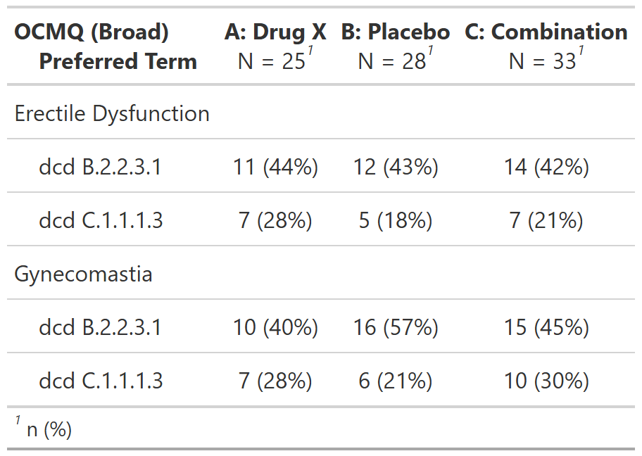

Subjects With Adverse Events by Male-Specific OCMQ (Broad) and Preferred Term, Male Safety Population, Pooled Analysis (or Trial X)
FDA Table 44
table
FDA
safety
adverse events
Code
# Load libraries & data -------------------------------------
library(dplyr)
library(cards)
library(gtsummary)
adsl <- pharmaverseadam::adsl
adae <- pharmaverseadam::adae
set.seed(1)
adae <- adae |>
mutate(
OCMQ01SC = as.factor(sample(c("BROAD", "NARROW"), nrow(adae), replace = TRUE)),
OCMQ01NAM = if_else(
SEX == "M",
as.factor(sample(
c("Erectile Dysfunction", "Gynecomastia"),
n(),
replace = TRUE
)),
NA_character_
)
)
# Pre-processing --------------------------------------------
data <- adae |>
filter(
SAFFL == "Y",
SEX == "M",
OCMQ01SC == "BROAD",
# filtering here to reduce the size of the table
AEDECOD %in% c("COUGH", "COLD SWEAT", "SOMNOLENCE", "APPLICATION SITE ERYTHEMA")
) |>
select(OCMQ01SC, TRT01A, OCMQ01NAM, AEDECOD, USUBJID) |>
# setting an explicit level for NA values so empty strata combinations are shown.
mutate(across(everything(), ~ {
if (anyNA(.)) {
forcats::fct_na_value_to_level(as.factor(.), level = "<Missing>")
} else {
.
}
}))
# denominator values include only Male subjects in the arm with AEs
denom <- data |> distinct(USUBJID, TRT01A)$tbl_hierarchical{cards} data frame: 63 x 15 group1 group1_level group2 group2_level variable variable_level context stat_name stat_label stat stat_fmt fmt_fun warning error gts_column
1 <NA> <NA> TRT01A Placebo tabulate n n 3 3 0 stat_1
2 <NA> <NA> TRT01A Placebo tabulate N N 18 18 0 stat_1
3 <NA> <NA> TRT01A Placebo tabulate p % 0.167 16.7 <fn> stat_1
4 <NA> <NA> TRT01A Xanomeli… tabulate n n 8 8 0 stat_2
5 <NA> <NA> TRT01A Xanomeli… tabulate N N 18 18 0 stat_2
6 <NA> <NA> TRT01A Xanomeli… tabulate p % 0.444 44.4 <fn> stat_2
7 <NA> <NA> TRT01A Xanomeli… tabulate n n 7 7 0 stat_3
8 <NA> <NA> TRT01A Xanomeli… tabulate N N 18 18 0 stat_3
9 <NA> <NA> TRT01A Xanomeli… tabulate p % 0.389 38.9 <fn> stat_3
10 TRT01A Placebo OCMQ01NAM Erectile… AEDECOD APPLICAT… hierarch… n n 0 0 <fn> stat_1ℹ 53 more rowsℹ Use `print(n = ...)` to see more rows